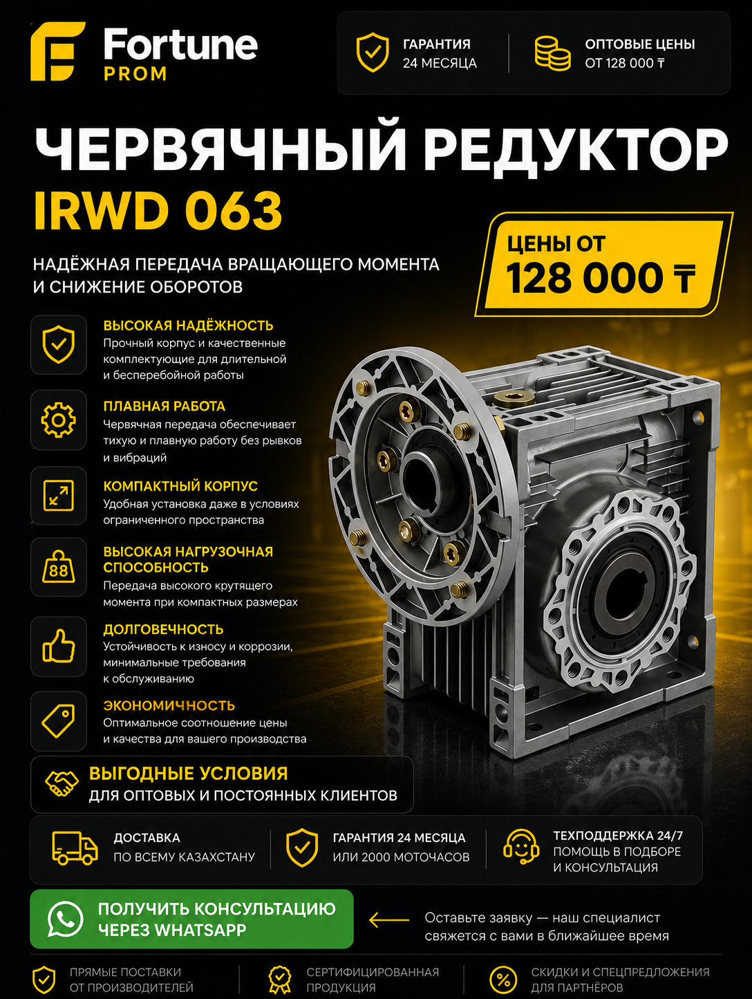

Высокая надёжность
Корпус из алюминиевого сплава, стабильная геометрия посадок и точная работа червячной пары при длительной эксплуатации.
Надёжное решение для промышленного оборудования, производственных линий, упаковочных узлов, транспортеров и приводов, где важны компактность, стабильная тяга и прогнозируемый ресурс.

Корпус из алюминиевого сплава, стабильная геометрия посадок и точная работа червячной пары при длительной эксплуатации.
Подбор по передаточным числам, типу фланца, посадке двигателя, валу 25 мм и условиям конкретного производства.
Корректно подобранный IRWD 063 снижает проскальзывание, уменьшает ударные нагрузки и помогает держать стабильный режим линии.
Сертифицированная продукция, гарантия 24 месяца или 2000 моточасов, сопровождение по подбору и запуску.
Подходит для производственных приводов, где важно учитывать пусковой момент, цикличность и температурный режим.
Оптовые цены, договор, счёт, закрывающие документы, поставки по Алматы, Астане и регионам без лишней бюрократии.
Ниже собрали параметры, по которым чаще всего принимают решение инженеры, снабженцы и технические специалисты при закупке червячного редуктора IRWD 063.
| Модель | IRWD 063 |
|---|---|
| Тип | Червячный редуктор для промышленного привода |
| Размер | 063 |
| Передаточные числа | 7.5 / 10 / 15 / 20 / 25 / 30 / 40 / 50 / 60 |
| Тип крепления | B14, лапы, фланцевое исполнение |
| Выходной вал | 25 мм |
| Совместимость | Электродвигатели IEC, промышленные моторы для линий и конвейеров |
| Применение | Конвейеры, упаковка, пищевая промышленность, деревообработка, насосные и дозирующие узлы |
| Наличие | Со склада и под заказ |
| Гарантия | 24 месяца или 2000 моточасов |
Червячный редуктор IRWD 063 относится к востребованным типоразмерам в сегменте компактных промышленных приводов. Его выбирают в тех случаях, когда нужно аккуратно понизить скорость вращения двигателя, получить рабочий крутящий момент на выходе и при этом сохранить компактный габарит узла. В Казахстане такие решения особенно часто востребованы на производстве, в упаковке, в пищевых линиях, в транспортирующих системах, на небольших насосных установках и в технологических узлах, где нет места под более массивный цилиндрический редуктор. Если компания ищет червячный редуктор IRWD 063 купить с понятными сроками поставки, официальными документами и технической консультацией, обычно сравнивают не только цену, но и пригодность модели к реальной нагрузке на объекте.
IRWD 063 — это червячный редуктор компактного типоразмера, который применяется для передачи мощности от электродвигателя к исполнительному механизму с одновременным уменьшением частоты вращения. Конструктивно такой редуктор работает за счёт пары «червяк и червячное колесо», благодаря чему обеспечивает плавную работу, удобную компоновку и хорошее соотношение габаритов к рабочим характеристикам. Для промышленного клиента это означает простую интеграцию в существующий привод, понятную механику обслуживания и возможность закрыть большинство задач по понижению оборотов без сложной переработки оборудования.
Когда инженер или отдел снабжения вводят в поиск запросы вроде «irwd 063 купить», «редуктор 063 цена Казахстан» или «редуктор 063 в наличии», за этим обычно стоит вполне практичная задача: нужно подобрать конкретный редуктор под мощность двигателя, под режим работы линии и под ожидаемую нагрузку. Поэтому одной только фразы «аналог NMRV 063» недостаточно. Важно понимать, какая посадка используется, какой нужен фланец, сколько часов в сутки будет работать привод и какие пиковые нагрузки возникают при запуске или торможении. Именно эти факторы определяют, подходит ли IRWD 063, или стоит перейти на IRWD 075.
На практике редуктор IRWD 063 применяют там, где производство требует устойчивой, предсказуемой и относительно компактной передачи усилия. Это могут быть конвейеры на складах и в цехах, упаковочные машины, мешалки, шнеки, подающие механизмы, дозирующие станции, узлы на сельскохозяйственном и пищевом оборудовании. Также типоразмер 063 часто используют в проектах модернизации, когда существующую линию нельзя сильно перестраивать, а новый привод должен встать в ограниченное монтажное пространство.
Для казахстанского рынка важен и климатический фактор. Оборудование может работать как в тёплом помещении, так и на неотапливаемом складе или в условиях резких перепадов температуры. Поэтому поставщик должен не просто отгрузить редуктор, а уточнить температурный режим, характер запуска, частоту включений и реальную схему работы производства. Это влияет и на подбор масла, и на оценку ресурса, и на выбор правильного передаточного числа. Компании, которые подходят к этому этапу формально, потом сталкиваются либо с недостаточным моментом, либо с перегревом, либо с ускоренным износом пары.
Частый технический запрос — «irwd 063 i 60» или «передаточное число irwd 063». Под обозначением i понимается отношение входной скорости к выходной. Чем выше передаточное число, тем ниже выходные обороты и тем выше теоретический крутящий момент на выходе при прочих равных. Например, если двигатель работает на стандартных 1500 об/мин и установлен редуктор IRWD 063 с i=60, выходная скорость будет в разы ниже, чем на варианте с i=10. Это удобно для медленных приводов, транспортеров и узлов, где важна тяга, а не скорость.
Но здесь есть принципиальный нюанс. Ошибка многих закупщиков в том, что они смотрят только на число оборотов и игнорируют коэффициенты запаса, пусковые моменты и характер нагрузки. Если линия работает рывками, часто стартует, имеет ударные нагрузки или взаимодействует с вязкой средой, формально «подходящее» передаточное число может не дать нужного ресурса. Поэтому подбор редуктора всегда должен учитывать не только математику по оборотам, но и условия эксплуатации. Для объектов с высокой нагрузкой и постоянным циклом эксплуатации мы часто рекомендуем сразу оценивать запас по типоразмеру.
Корректный подбор начинается с пяти базовых параметров: мощность двигателя, входные обороты, желаемые выходные обороты, тип нагрузки и режим работы. Если у компании уже есть двигатель, то нужно знать его стандарт IEC, посадку, мощность в кВт, частоту вращения и предполагаемый способ монтажа. Дополнительно важны условия по фланцу, например когда требуется редуктор 063 B14, а также диаметр выходного вала, например редуктор 063 вал 25 мм. Именно эти детали определяют, подойдёт ли конкретная конфигурация без переходных пластин и переделки креплений.
Следующий этап — расчёт эксплуатационного запаса. Для равномерной нагрузки на непрерывной линии один сценарий, для мешалки, шнека или подающего механизма с пиками нагрузки — другой. Если привод работает по схеме «запуск-стоп» десятки раз в смену, лучше не выбирать модель впритык. В сегменте B2B это особенно важно: простой линии обходится дороже, чем разница между соседними типоразмерами редуктора. Именно поэтому при сомнениях между 063 и 075 практичнее рассматривать IRWD 075 как страхующий вариант, особенно если производство критично к остановкам.
Запрос «nmrv 063» и «аналог nmrv 063» часто связан с желанием найти взаимозаменяемый вариант. В большинстве случаев IRWD 063 действительно рассматривают как близкий по классу и области применения редуктор. Но нельзя автоматически считать, что все модификации полностью одинаковы. Нужно сверять монтажные размеры, тип крепления, расположение выходного вала, размеры фланца, совместимость с конкретным мотором и рабочий момент. Для производственного предприятия это принципиально: даже небольшой сдвиг по посадке может повлечь дополнительные затраты на адаптацию.
С точки зрения коммерческой логики IRWD 063 часто выигрывает, когда нужен не просто аналог, а реальная поставка с быстрым подбором под конкретную линию, подтверждёнными условиями гарантии и возможностью закрыть заявку комплектом. В таких кейсах важна не только цена редуктора 063, но и глубина сопровождения: помогают ли вам подобрать мотор, проконтролировать монтажные параметры, сформировать счёт и быстро закрыть объект по документам. Для B2B-покупателя это и есть реальная ценность поставщика.
Когда ищут «редуктор Ч-80» или сравнивают его с современными червячными моделями, обычно речь идёт о разнице поколений. Ч-80 — это более традиционный формат, который остаётся востребованным на ряде объектов, но зачастую проигрывает по компактности, удобству интеграции и гибкости монтажа. IRWD 063 чаще выбирают там, где нужны современная компоновка, компактный корпус, удобное сочетание с электродвигателем и более гибкая работа с монтажными конфигурациями.
При этом Ч-80 может оставаться рабочим выбором в консервативных схемах, где вся конструкция уже заточена под этот формат. Поэтому корректная рекомендация зависит не от абстрактного рейтинга, а от вашего оборудования. Если задача стоит в модернизации и снижении габаритов, IRWD 063 обычно интереснее. Если система десятилетиями собрана под Ч-80 и менять компоновку нельзя, тогда анализировать нужно глубже.
Самая частая ошибка — покупать редуктор только по размеру, не считая момент и режим работы. Вторая ошибка — ориентироваться только на стартовую цену и не учитывать стоимость простоя. Третья — не уточнять способ крепления и тип двигателя. Четвёртая — не закладывать запас под фактическую нагрузку. Пятая — искать редуктор в розничной логике, тогда как для компании важнее стабильность поставки, документы, гарантия и консультация по монтажу.
Ещё одна проблема — смешение информационного и коммерческого запроса. Например, поисковая фраза «какой редуктор выбрать для электродвигателя» требует консультации и расчёта, а не просто прайса. Если в такой ситуации взять первую попавшуюся модель без анализа, можно ошибиться по выходным оборотам, по тепловому режиму и по монтажной схеме. Для бизнеса это лишние затраты и переносы сроков запуска объекта.
IRWD 075 нужен тогда, когда типоразмер 063 уже работает на грани. Обычно это проявляется при более высоких мощностях двигателя, увеличенной длительности работы, тяжёлой нагрузке, частых включениях или повышенном требовании к запасу по моменту. Если линия должна идти круглосуточно, транспортировать тяжёлый продукт или работать с инерционной нагрузкой, переход на 075 часто оказывается рациональным решением ещё на этапе проекта. Это особенно справедливо для новых производственных площадок, где стоимость незапланированного простоя кратно выше экономии на младшем типоразмере.
Для B2B-клиента важен не просто редуктор, а управляемая поставка. Fortune PROM выстраивает процесс так, чтобы закупка была предсказуемой: техническая консультация, подбор модели, счёт, договор, закрывающие документы, отгрузка по Казахстану, сопровождение по совместимости и гарантийным условиям. Это особенно важно для снабжения и инженеров, которым нужно не «что-то похожее», а решение, которое реально встанет в узел и не сорвёт график запуска.
Когда закупка идёт через профильного промышленного поставщика, компания получает не просто коробку с оборудованием, а контур ответственности. Можно быстро уточнить, какой редуктор подойдёт под мотор, какой фланец нужен, есть ли в наличии вариант с нужным передаточным числом, когда потребуется IRWD 075 и можно ли заменить NMRV 063 без переделки линии. Для закупщика это экономия времени, для инженера — снижение риска ошибки, для бизнеса — более предсказуемый ввод оборудования в эксплуатацию.
В промышленной практике двигатель почти никогда не работает в идеально лабораторных условиях. Реальная линия создаёт сопротивление, имеет инерцию, периодически даёт рывки и может работать с изменяющейся массой продукта. Поэтому даже если по мощности двигатель «небольшой», фактическая нагрузка на редуктор способна оказаться значительно выше, чем ожидают при поверхностном подборе. Именно из-за этого запросы вроде «редуктор irwd 063 для производства» и «какой редуктор выбрать для электродвигателя» не решаются одной строчкой из прайса.
Для производственного предприятия правильно учитывать коэффициент сервиса, частоту пусков, возможные остановки под нагрузкой, длину рабочей смены и фактическую температуру среды. На бумаге два узла могут выглядеть одинаково, но один будет работать 6 часов в день с мягким пуском, а другой — 24/7, в запылённом цехе и с тяжёлым запуском. Во втором случае IRWD 063 может подойти только при хорошем запасе, а в ряде проектов разумнее сразу переходить на IRWD 075, чтобы не возвращаться к замене через несколько месяцев.
При выборе редуктора компании часто сосредотачиваются на цене закупки, но для B2B важнее совокупная стоимость владения. Если редуктор подобран корректно, работает в своём диапазоне и обслуживается по регламенту, он даёт прогнозируемый ресурс и помогает избежать аварийной остановки линии. Для снабжения это означает меньшую турбулентность, а для производства — более стабильный выпуск продукции. Поэтому на странице по запросу «irwd 063 купить» важно не только показать стоимость, но и объяснить, как решение ведёт себя в эксплуатации.
Ключевые рекомендации простые: не перегружать редуктор, использовать подходящую смазку, контролировать отсутствие перекоса при монтаже, не игнорировать вибрацию и шум на старте. Если оборудование запускается тяжело или редуктор быстро нагревается, лучше не ждать отказа, а перепроверить расчёт. Такой подход дешевле аварийного ремонта и помогает заранее понять, нужен ли запас по типоразмеру. Именно поэтому Fortune PROM делает упор на инженерную консультацию ещё до отгрузки.
В B2B-цикле решение о покупке редуктора почти всегда коллективное. Снабжение смотрит на цену, сроки и документы. Инженер оценивает совместимость и ресурс. Руководитель проекта думает о сроках запуска и рисках. Коммерческая страница должна помогать всем этим ролям одновременно. Поэтому мы раскрываем характеристики, передаточные числа, аналоги, логику подбора и сценарии применения, а не ограничиваемся коротким каталогом. Такой подход лучше работает и на SEO, и на реальную конверсию в заявку.
На практике удобнее всего, когда компания сразу отправляет базовые вводные: мощность двигателя, обороты, предполагаемое передаточное число, тип нагрузки, режим работы и город поставки. Этого уже достаточно, чтобы предложить первичный вариант и понять, будет ли это IRWD 063, IRWD 075 или близкий аналог NMRV 063. Если у проекта есть специфика по валу 25 мм, креплению B14 или нестандартной монтажной схеме, такие детали лучше обозначить сразу. Тогда подбор занимает меньше времени, а риск ошибки заметно снижается.
Для Казахстана важно не только наличие товара, но и логистика поставки. Одним клиентам нужен быстрый складской вариант в Алматы, другим — централизованная отгрузка в Астану, третьим — поставка в регион под производственный график. Именно поэтому мы строим коммуникацию вокруг понятных сроков и прозрачного процесса: подтверждение модели, согласование цены, выставление счёта, документы и отгрузка. Для предприятий это снижает организационную нагрузку и помогает вписать закупку в внутренние регламенты компании.
Отдельно стоит учитывать, что производственные компании часто закупают не один редуктор, а партию под проект или несколько позиций на разные узлы. В таком случае особенно важны оптовые условия и единый технический контур по подбору. Если в одном проекте одновременно используются IRWD 063, IRWD 075 и близкие аналоги, удобнее закрывать потребность через одного поставщика, который видит всю картину и помогает удержать совместимость по приводам.
Мы работаем с промышленными предприятиями Казахстана и фокусируемся на практическом подборе оборудования под задачу, а не на формальной продаже по каталогу. Подбираем решения для производств Алматы, Астаны, Шымкента, Караганды, Актобе и регионов, сопровождаем поставки документально и технически. Важная часть E-E-A-T для промышленной ниши — не только текст на сайте, но и понятные условия сотрудничества: реальные фото оборудования, кейсы поставок, сертифицированная продукция, гарантия 24 месяца или 2000 моточасов, консультация по внедрению.
Если вам нужно купить IRWD 063 в Казахстане для линии, модернизации участка или нового проекта, имеет смысл отправить вводные по двигателю, нагрузке и городу поставки. Так мы быстрее подберём конфигурацию, предложим релевантный вариант по передаточному числу и сразу обозначим, подходит ли IRWD 063 или рациональнее переходить на 075. Такой подход лучше работает на результат, чем покупка по одному размеру из прайса.
Заполните параметры двигателя и режима работы. Калькулятор даст предварительную рекомендацию по типоразмеру и поможет отправить данные специалисту в WhatsApp.
Работаем с ТОО, ИП, производствами и снабженческими отделами. Выставляем счёт, готовим договор и закрывающие документы.
Оптимален для компактных приводов, стандартных производственных задач и проектов, где нужна сбалансированная цена и рабочий ресурс.
Часто рассматривается как аналог. Подходит, если важны близкие монтажные размеры и нужна альтернатива для типовых узлов.
Актуален для ряда старых схем, но обычно уступает по компактности, современности компоновки и удобству интеграции.
Поставляем промышленное оборудование и помогаем подобрать редукторы под задачи производства, а не просто по названию модели.
Работаем с заводами, производственными площадками, цехами, подрядчиками и снабженческими отделами по всему Казахстану.
Готовим договор, счёт, спецификацию и закрывающие документы, согласуем поставку и сопровождаем подбор.
Используем реальные фото оборудования, поставляем сертифицированную продукцию и предоставляем гарантию 24 месяца или 2000 моточасов.
Это обозначение червячного редуктора типоразмера 063, который применяется в компактных промышленных приводах.
Да, часть модификаций доступна со склада, остальные поставляются под заказ с согласованием сроков.
Да, при корректном подборе передаточного числа и проверке требуемого момента на выходе.
Обычно востребованы 10, 15, 20, 25, 30, 40, 50 и 60, но конкретная поставка зависит от конфигурации.
Это передаточное число, показывающее отношение входной скорости к выходной. Чем выше значение, тем ниже выходные обороты.
Да, редуктор 063 вал 25 мм является распространённым запросом, но важно проверять конкретную модификацию.
Да, конфигурация редуктор 063 B14 используется для ряда монтажных схем и подбирается под мотор и фланец.
Они близки по классу, но при замене нужно сверять монтажные размеры, посадки, фланцы и рабочие характеристики.
Если мощность выше, нагрузка тяжелее, нужен запас по моменту или оборудование работает в режиме 24/7.
Да, это один из типовых сценариев применения при корректном расчёте оборотов и усилия.
Да, для B2B-клиентов доступны оптовые условия, счёт, договор и сопровождение поставки.
Да, отправьте параметры двигателя, передаточное число, тип нагрузки, город и компанию.
Гарантия составляет 24 месяца или 2000 моточасов в зависимости от условий эксплуатации.
Да, организуем поставки по Алматы, Астане и регионам Казахстана.
Потому что вы получаете подбор под задачу, документы, гарантию и меньше риска ошибки при закупке.
Подберём редуктор под двигатель, объясним разницу между IRWD 063, NMRV 063 и IRWD 075, подготовим счёт и согласуем поставку по Казахстану.
Получить консультацию через WhatsApp